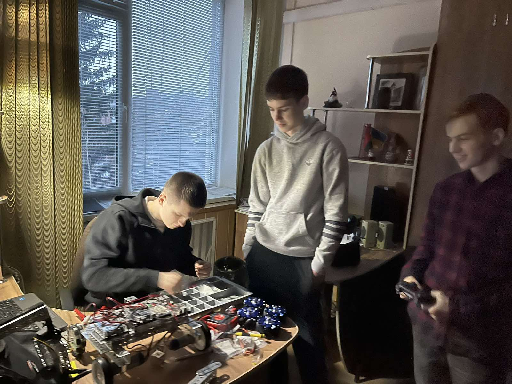
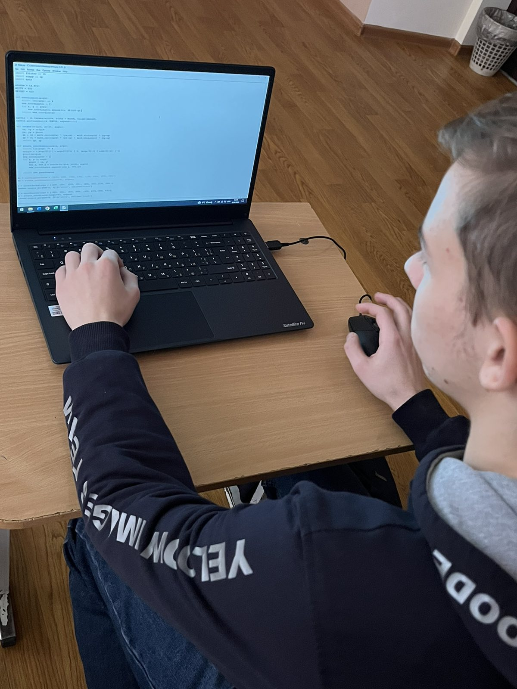
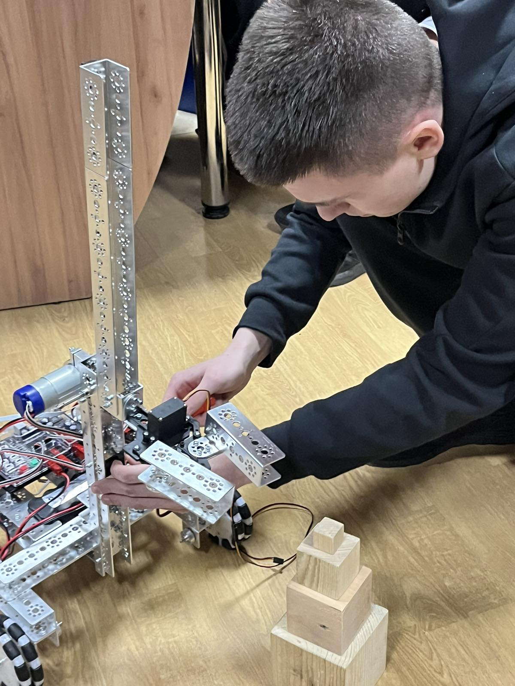
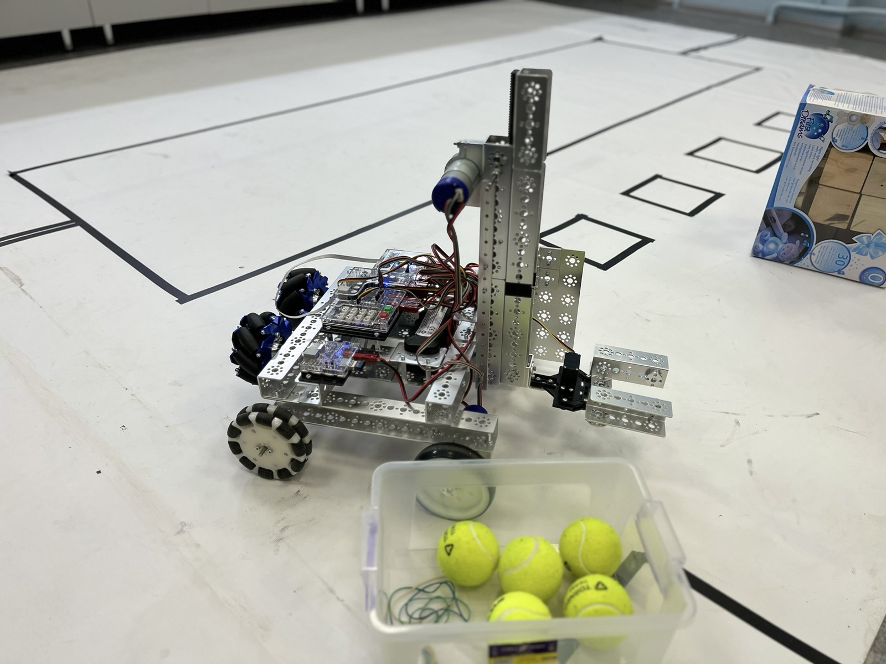
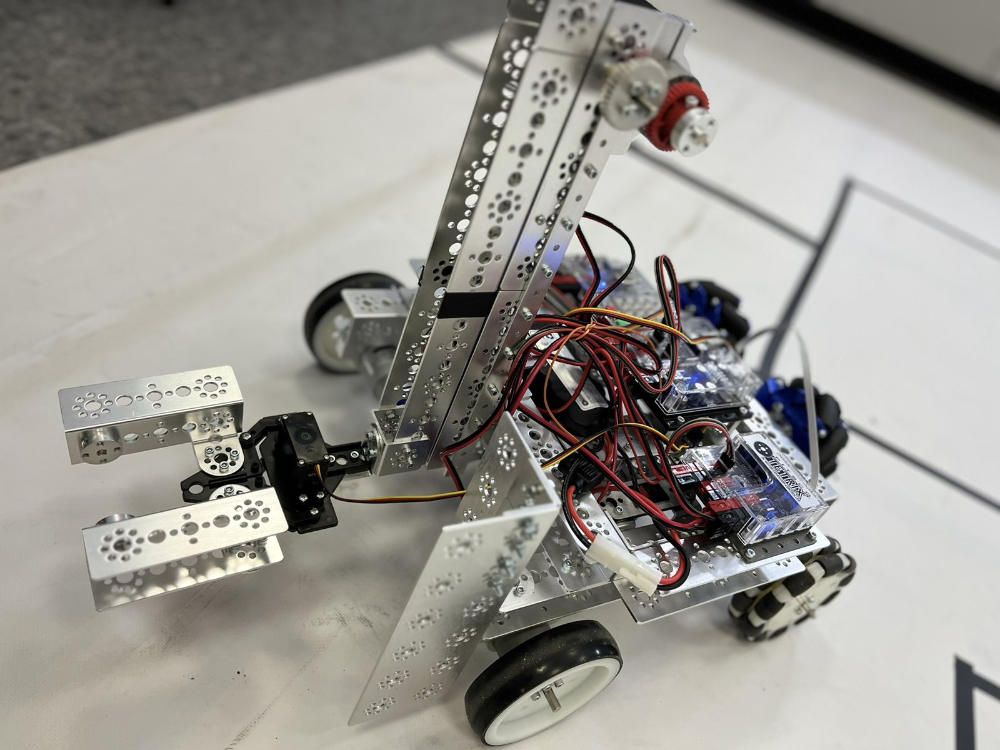
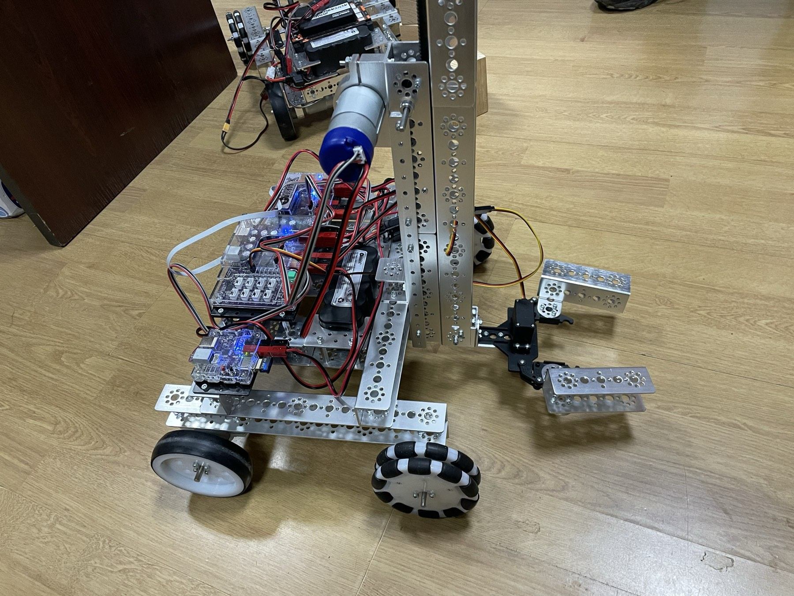
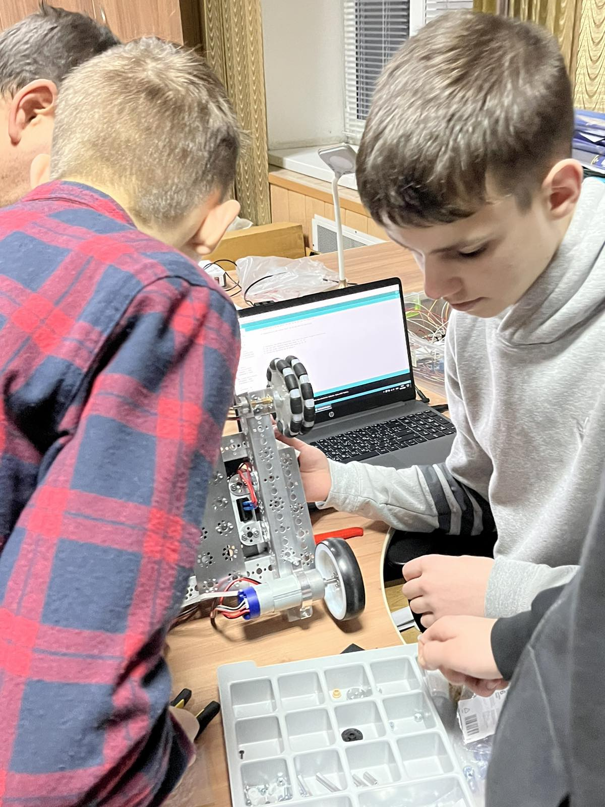

We chose Tetrix over Lego Spike for our robot project because of its advanced features, customization options, and superior performance capabilities.
Project discussion
We had a choice between Lego Spike and Tetrix for our robot-building project. While Lego Spike was relatively straightforward to maintain and program, we quickly realized that it lacked the necessary power for our specific task. After careful consideration, we opted to construct our robot using Tetrix instead.
Tetrix, being a more advanced platform compared to Lego, demanded specific knowledge and expertise. However, its advantages outweighed the initial learning curve. Tetrix offered us the ability to create robust, agile, and highly customizable robots, tailored precisely to our project requirements. With Tetrix, we gained access to a wide range of components and features that enhanced the overall performance and functionality of our robot.
11.08.2022
Main part of the robot
We built a strong robot foundation using Tetrix, integrated Prizm modules, connected wires, and powered it with batteries. Testing confirmed successful functionality.

Main part of the robot
We embarked on our development journey by focusing on the initial step of creating the foundation of our robot. Guided by the comprehensive Tetrix documentation, we meticulously followed the instructions to construct a robust and stable base.
To ensure optimal performance and control, we integrated both the Prizm and Prizm tele-op modules into our design. This allowed us to leverage their advanced features and functionalities throughout the robot's operation.
With great attention to detail, we carefully connected all the necessary wires, ensuring a reliable and secure electrical setup. Additionally, we made sure to install the required batteries to power our creation effectively.
With the construction phase complete, we eagerly proceeded to test the robot's functionality. To our delight, every component and subsystem responded as intended, validating the success of our development process.

11.08.2022
Basic movement
Despite initial movement challenges, we programmed the robot using the PS4 controller. The precise commands allowed us to adjust the robot's speed, enhancing its movement capabilities.
Basic movement
After completing the construction of our robot, we were excited to witness its capabilities in action. However, we faced an unexpected setback when it failed to move as intended. Undeterred, we immediately shifted our focus to programming the robot to enable its locomotion using the PS4 controller buttons.
We dedicated ourselves to creating a comprehensive set of movement commands, encompassing forward, backward, and turning motions. Through diligent programming efforts, we ensured that each command was accurately mapped to the corresponding button on the controller.
During the decision-making process, we encountered a significant challenge: selecting the ideal button for controlling the robot's movement. We carefully weighed our options, considering factors such as ease of use and versatility. Ultimately, after thoughtful analysis, we concluded that utilizing the joystick offered the most advantageous solution.
By leveraging the joystick, we unlocked the ability to seamlessly adjust the robot's speed during its movement. This added functionality greatly enhanced our control over the robot's locomotion, enabling us to adapt its speed to various scenarios and obstacles encountered along its path.
With the programming phase successfully completed, we eagerly anticipated the moment of truth: testing the robot's newfound movement capabilities.
11.08.2022
Manipulator: first attempt
A manipulator equipped with a servo for rotation and another servo dedicated to grasping cubes

Manipulator: first attempt
We initiated our project with a fundamental concept in mind: a manipulator equipped with a servo for rotation and another servo dedicated to grasping cubes. The primary objective was to develop a mechanism capable of lifting objects, particularly cubes. However, as we proceeded with our initial design, we encountered a significant challenge. Despite the manipulator's ability to elevate itself, it proved incapable of effectively gripping even the smallest cube.
Undeterred by this setback, we devoted considerable time and effort to troubleshoot and upgrade the manipulator. We explored various modifications and modernizations, exploring alternative configurations and fine-tuning the mechanism. Nevertheless, our endeavors proved to be in vain, as we still struggled to achieve successful cube retrieval.
The inability to grasp even the smallest cube left us perplexed and determined to find a solution. We meticulously analyzed the intricacies of the manipulator, its gripping mechanism, and the factors contributing to its limitations. This allowed us to identify potential areas for improvement and guide our subsequent steps.
Despite our best efforts, the challenge of successfully gripping cubes persisted. However, our commitment to innovation and problem-solving remained unwavering, driving us to explore alternative approaches and seek expert advice.

11.08.2022
Discussion of various manipulators
To create a stronger manipulator, we wanted to replace servo with a motor
Discussion of various manipulators
Recognizing the need for a stronger manipulator, we deliberated on potential solutions. It became evident that replacing the servo with a motor was the most promising course of action. However, an obstacle emerged: our robot's limited motor ports. With all available ports already allocated for movement, we faced a challenge in finding a way to integrate the necessary additional motors.
Fortunately, our perseverance paid off when we discovered a servo motor extension. This invaluable device provided us with the means to expand our motor capacity and overcome the limitation imposed by the robot's original design. By incorporating the servo motor extension, we successfully created the required space for the additional motors, granting us the freedom to pursue our enhanced manipulator concept.
Building upon this breakthrough, we brainstormed and devised a vertical manipulator design that leveraged the power of gears. The use of gears introduced a new level of precision and control to the manipulator's movement, enabling smooth vertical motion for enhanced object manipulation capabilities. This innovative approach allowed us to elevate the effectiveness and reliability of our manipulator, enabling it to perform tasks with improved efficiency and dexterity.
11.08.2022
New manipulator
A manipulator that moves along a vertical rail. Capture is accomplished with a servo drive, while lifting is facilitated by a Tetrix motor.

New manipulator
Utilizing the existing components, we commenced the manufacturing process of a new manipulator. Initially, we explored several options that unfortunately proved unsuccessful. However, through collective teamwork and persistent efforts, we eventually settled on a design and successfully constructed the new manipulator.
The finalized design featured a manipulator that traversed along a vertical rail. We employed a conventional servo drive for the capturing mechanism and a Tetrix motor for the lifting functionality. These components synergistically combined to enable precise grasping and efficient lifting of objects.
By integrating the manipulator onto the vertical rail, we achieved improved mobility and flexibility, granting our robot the ability to navigate its environment more effectively. The conventional servo drive provided reliable and controlled capturing capabilities, ensuring a secure hold on objects. Additionally, the Tetrix motor facilitated efficient lifting, enabling the manipulator to handle varying weights and sizes of objects with ease.
The successful development of this new manipulator was a testament to the dedication and collaboration of our team, showcasing our ability to overcome challenges and deliver innovative solutions.

11.08.2022
Robot programming
After constructing the robot, we programmed it with improved control. We switched from button control to joysticks for convenience. As a result, the robot could move and lift objects successfully.
Robot programming
Once the robot was prepared, our next step was to program it. Numerous discussions took place regarding how to implement the robot's control system. We debated which buttons to assign for movement, how to raise and lower the manipulator, and the possibility of incorporating additional functions to enhance the robot's capabilities.
Initially, we decided to control the robot using buttons L1, L2, R1, and R2. However, as we delved deeper into the programming phase, we realized that this control scheme was not as user-friendly and intuitive as we had hoped. As a result, we made a crucial decision to switch the robot's control mechanism to joysticks, which ultimately proved to be a wise choice. The joysticks offered a more seamless and natural control experience, enabling precise and effortless manipulation of the robot's movements.
With the control scheme resolved, we shifted our focus to programming the manipulator. Since many buttons were already allocated for other functions, we opted to utilize the UP and DOWN buttons for controlling the manipulator's lifting mechanism. This decision allowed us to streamline the control interface and maximize the available resources.
After extensive programming efforts and fine-tuning, our hard work paid off. The robot was successfully programmed to execute movement commands and effectively lift objects. This achievement marked a significant milestone in our project, as we witnessed the culmination of our efforts come to fruition.
11.08.2022
Multi-directional wheels
To address slow movement, we replaced the wheels with multi-directional ones. Overcoming challenges of motor assignment and design limitations, we successfully installed and programmed the new wheels.

Multi-directional wheels
Our robot had already acquired the skills of driving and lifting objects; however, we noticed that its performance seemed rather sluggish. Determined to improve its speed, our team made the decision to replace the standard wheels with specialized multi-directional wheels. This transition presented us with a series of challenges.
One of the primary obstacles we faced was the need for each wheel to have its own motor, necessitating modifications to the manipulator's control system. Consequently, we opted to utilize a servo drive for the manipulator, which added an additional layer of complexity to the assembly and programming processes.
The task of assembling the robot and reprogramming its movement posed another significant challenge. The existing design did not easily accommodate such alterations, requiring us to carefully navigate through these limitations. Despite these obstacles, our team persevered, and with great effort, we successfully installed the multi-directional wheels and reprogrammed the robot accordingly.
Through meticulous programming, we ensured that the robot's movement commands aligned seamlessly with the newly implemented wheels. Although the process demanded considerable time and attention to detail, our collective efforts paid off, culminating in a robot that could now move with improved speed and agility.
11.08.2022
Removal of the wheels
New wheels led to disappointing results: difficult control, drifting, decreased speed, and insufficient lifting power. We decided to return to the old robot version.
Removal of the wheels
After the installation of the new wheels and conducting tests, we were met with disappointment due to the results obtained. Controlling the robot became notably more challenging as it began to drift in various directions. Additionally, the speed of the robot decreased due to the unique characteristics of the wheels and their inadequate grip on the surface.
Furthermore, we encountered another setback: all four motor outputs were already allocated for movement, leaving us with insufficient lifting power for the cubes. Taking into account these shortcomings and limitations, we collectively made the decision to revert back to the previous version of the robot.
By reverting to the old version, we aimed to regain the stability, control, and lifting capability that we had initially achieved. This choice allowed us to mitigate the issues associated with the new wheels and restore the robot's overall functionality and performance.
While the attempt to enhance the robot's speed and maneuverability through the new wheels did not yield the desired outcome, it served as a valuable learning experience for our team. It emphasized the importance of carefully considering the specific requirements and limitations of any modifications made to the robot's design and components.
11.08.2022
Slow start
We improved the software by programming the robot to consider past speeds when adjusting, we achieved the desired performance.
Slow start
Confident in the perfection of our design, we shifted our focus to refining the software aspect. During testing, we observed that the robot exhibited an abrupt start, which hindered smooth control. Recognizing the need for improvement, we dedicated ourselves to rectifying this issue.
To address the problem, we programmed the robot to consider its previous speed when adjusting the current speed. By implementing this adjustment, we successfully achieved the desired outcome of a smoother start and enhanced control. This modification allowed for a more gradual acceleration, ensuring a seamless transition in speed changes and improving the overall user experience.
Through our programming efforts, we effectively optimized the software to enhance the robot's performance and control characteristics. This attention to detail and commitment to refining the software demonstrated our dedication to creating a superior and user-friendly robot.
11.08.2022
Micro movement
To enhance precision when approaching a cube pyramid, we added a button for small adjustments, enabling the robot to make neat movements towards the pyramid.
Micro movement
During our driving sessions, we encountered an additional challenge when maneuvering the robot near a pyramid of cubes. Making precise adjustments to position the robot for placing the next cube proved to be quite difficult. To overcome this obstacle, we devised a solution: incorporating an additional button specifically dedicated to facilitating minimal movements of the robot.
By introducing this new button, the operator could simply press it to activate a predefined set of instructions, enabling the robot to execute meticulous movements towards the pyramid. This feature significantly enhanced the robot's accuracy and maneuverability in tight spaces, allowing for precise cube placement with ease.
With the integration of this button, operators could effortlessly trigger the robot's smooth and controlled movements, ensuring a neat approach to the pyramid of cubes. This improvement streamlined the workflow and minimized the operator's effort, making the entire process more efficient and precise.
11.08.2022
Manipulator improvement
We increased the speed of the manipulator. Additionally, we thoroughly inspected the entire structure to ensure there were no further problems.
Manipulator improvement
Another aspect that drew our attention was the manipulator. While it fulfilled its intended function, we noticed that it operated at a sluggish pace and occasionally encountered obstacles within the structure. Since the motor was already operating at maximum speed, we determined that replacing the small gear with a larger one would be a viable solution. This modification would increase the number of revolutions and, subsequently, enhance the manipulator's speed and efficiency.
In addition to addressing the gear issue, we conducted a thorough inspection of the entire structure to identify and rectify any remaining problems. Our goal was to ensure that the manipulator could operate seamlessly without any further hindrances.
By implementing the larger gear and thoroughly examining the structure, we proactively resolved the concerns pertaining to the manipulator. This comprehensive approach to troubleshooting and optimization allowed us to optimize the manipulator's performance, enabling it to operate with improved speed and overcome any potential obstacles within the structure.
11.08.2022
Last fixes
During the final test, we addressed maneuverability issues by adding a front bucket to handle the cubes and a counterweight at the back for stability.
Last fixes
During the final test of the robot, we encountered new challenges. The limited space on the playing field made it particularly difficult to maneuver and position the large cubes accurately. To overcome this obstacle, we devised a solution: incorporating a bucket at the front of the robot. This addition allowed us to effectively gather the cubes and deposit them in more convenient locations.
Furthermore, to enhance the stability of the robot, we introduced a counterweight at its rear. For this purpose, we opted to utilize regular wheels due to their significant weight, which contributed to the desired stability.
By implementing these modifications, we significantly improved the robot's functionality and performance during the final test. The addition of the bucket enabled efficient cube handling, facilitating precise placement even in tight spaces. Additionally, the counterweight at the back enhanced the overall balance and stability of the robot, ensuring steady movements and reducing the risk of tipping over.
Through careful consideration and adaptation, we addressed the challenges faced during the final test, successfully optimizing the robot for its intended purpose.